Brussels and Luxembourg City — comic murals, the Atomium, and the old town on the Alzette.
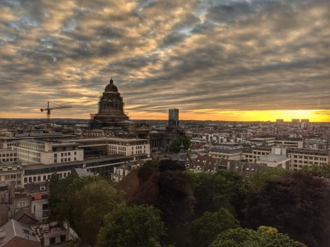
Brussels, Belgium
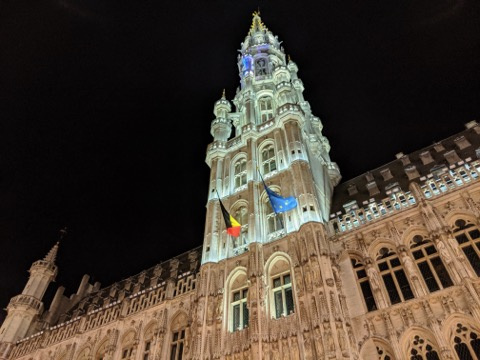
Grand Place, Brussels
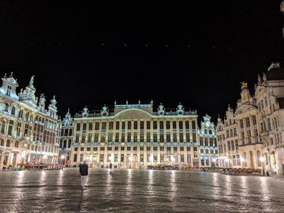
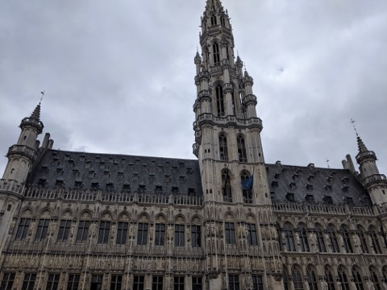
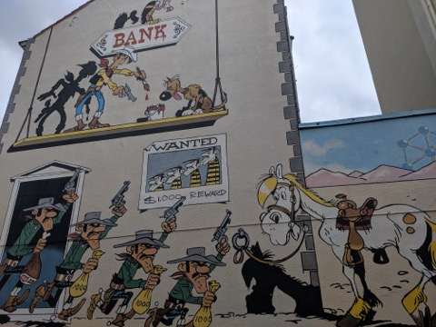
Comic Book Route, Brussels
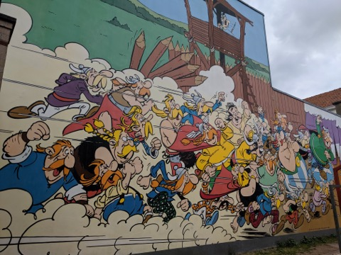
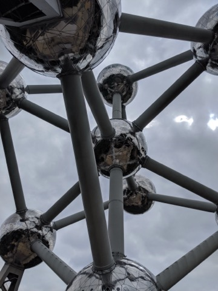
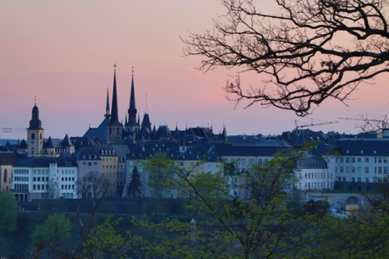
Luxembourg City
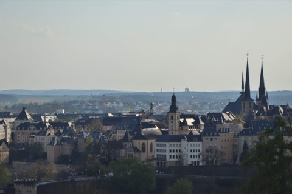
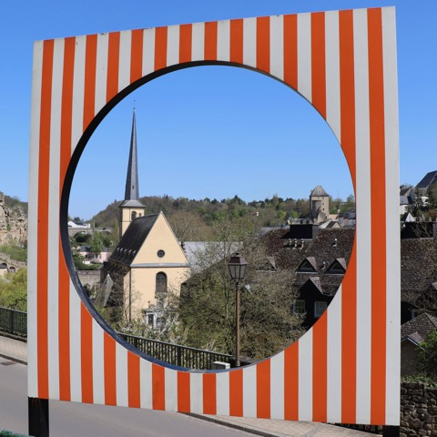
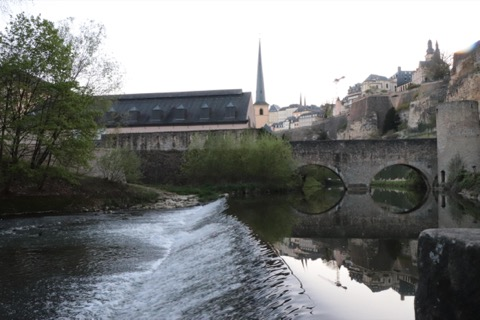
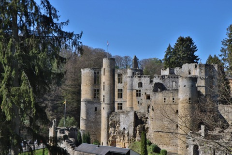
Beaufort, Luxembourg
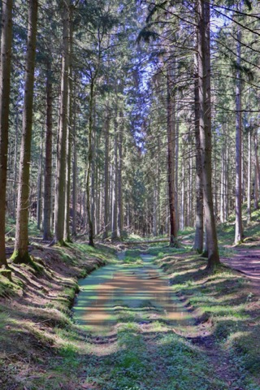
Luxembourg
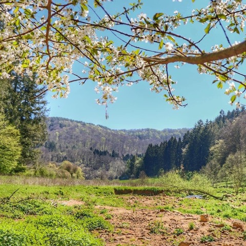